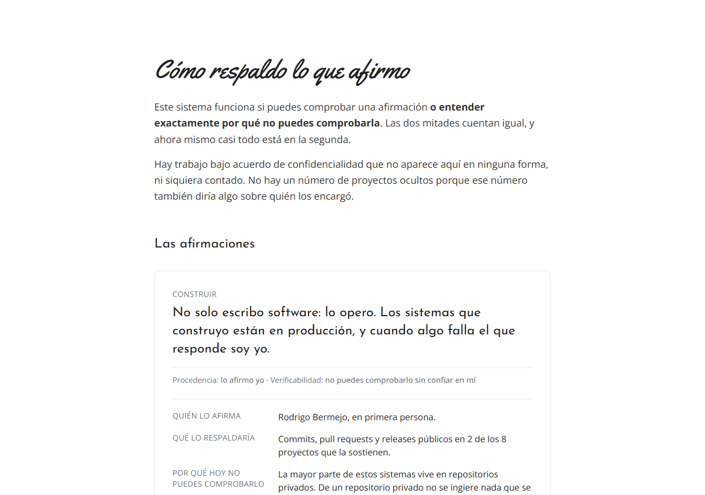
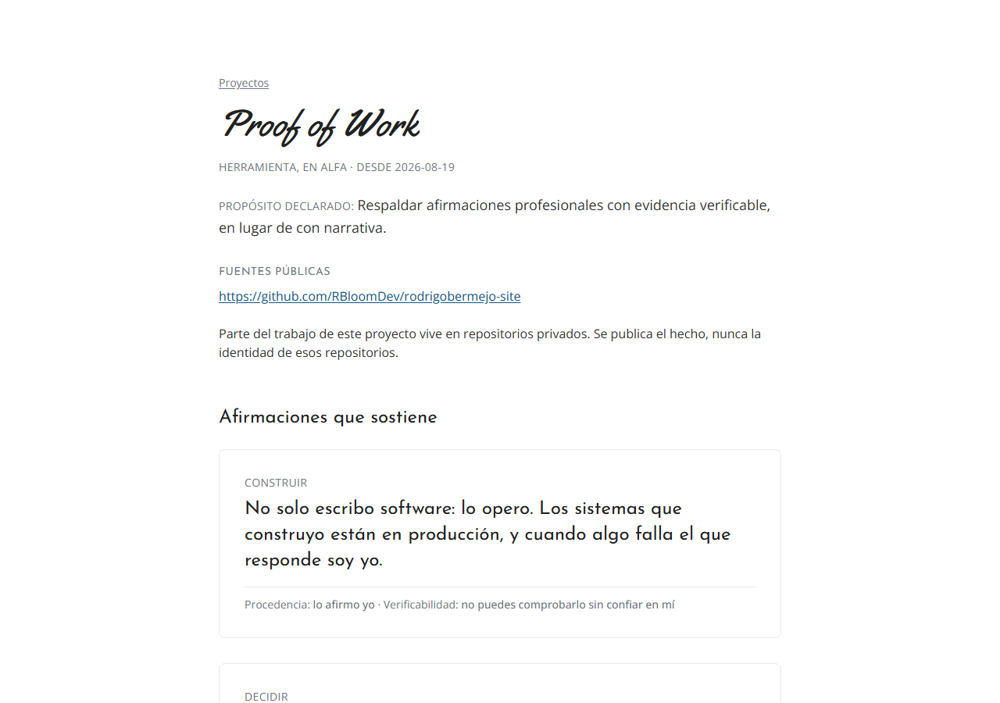

Construir
«No solo escribo software: lo opero. Los sistemas que construyo están en producción, y cuando algo falla el que responde soy yo.»
Procedencia: lo afirmo yo · Verificabilidad: no puedes comprobarlo sin confiar en mí.
Proyecto
«Respaldar afirmaciones profesionales con evidencia verificable, en lugar de con narrativa.»
Fuentes públicas
github.com/RBloomDev/rodrigobermejo-site
Es el único de los doce proyectos cuyo trabajo se puede enseñar entero: el repositorio es público y con él se pueden comprobar las cifras de abajo una por una.
Parte del trabajo de este proyecto vive en repositorios privados —el motor de evidencia entre ellos—. Se publica el hecho, nunca la identidad de esos repositorios, y nada de lo que hay en ellos entra en las cifras de esta página.
Las dos capturas son del sitio publicado, tomadas el 2026-09-13 en
rodrigobermejo.com a 1280 × 900. No son maquetas ni
composiciones: es lo que devuelve el servidor hoy, con el feed real de doce proyectos
y tres afirmaciones.

/evidencia — el índice canónico. Abajo de cada afirmación, el par
procedencia + verificabilidad como una sola oración.

/proyectos/proof-of-work — la pantalla que este prototipo propone
reemplazar. Hoy no muestra ninguna actividad registrada.
public/ contiene seis archivos —un icono
SVG, dos PNG de icono, un placeholder, un retrato y un llms.txt—
y ninguno documenta una pantalla. Las dos de arriba las
generó el agente contra el sitio publicado y las guardó en
docs/plataforma/prototipo/_capturas/ para este prototipo. Si mañana
cambia el sitio, estas imágenes quedan desfasadas y nada lo detecta: no hay proceso
que las regenere.
Volumen de trabajo registrado en la fuente pública de este proyecto, en un periodo declarado. No es una medida de competencia, de calidad ni de seniority, y no se compara con ningún otro proyecto ni con ningún otro periodo.
Y hay que decir el tamaño de lo que se está mirando: este es uno de 218 repositorios repartidos en cuatro contextos de trabajo, 163 de ellos privados. Sus 24 pull requests son 24 de los 1459 que el agregado cuenta en 2026. Esta página no es el retrato de su actividad; es la parte que se puede enseñar entera. El agregado, con su cobertura y su nota de privacidad, está en proyectos y actividad.
main
— cobertura: el repositorio público · 2026-01-01 a 2026-09-11
gh api --paginate "repos/RBloomDev/rodrigobermejo-site/commits?sha=main&since=2026-01-01T00:00:00Z&until=2026-09-11T23:59:59Z"main. Conteo de eventos, no duración ni volumen de código.gh api --paginate "repos/RBloomDev/rodrigobermejo-site/pulls?state=all", leída el 2026-09-13.Es procedencia declarada, no productividad: dice que hubo asistencia, no qué parte del trabajo hizo la IA. De este dato no sale ningún porcentaje de «trabajo hecho por IA» ni de «horas ahorradas».
Co-Authored-By del mensaje de cada commit, en la misma respuesta de la API.
Este cero está medido y por eso se escribe como cero. Las
7 revisiones que sí existen en el repositorio son todas del
bot copilot-pull-request-reviewer, todas en estado comentado y
ninguna es una aprobación. No se suman a las humanas: son
clases distintas de cosa, y mezclarlas convertiría una revisión automática en
el aval de una persona.
gh api graphql sobre repository.pullRequests.reviews, con autor y estado de cada revisión; contrastado con gh api "repos/RBloomDev/rodrigobermejo-site/pulls/comments". Leído el 2026-09-13.Este cero sí está medido, y por eso se escribe como cero y no como hueco: el feed existe, se leyó y contiene cero registros. Es lo contrario de los tres huecos de abajo, donde no hay nada que leer.
public/proof/v1/meta.json, campo counts.evidence, generado por el motor el 2026-08-28T23:28:38Z.Evidence publicados. Las dos afirmaciones de este proyecto tienen evidence_ids: [].
Commits que llegaron a main en este repositorio, mes
a mes. Sin orden, sin comparación contra el mes anterior y sin tendencia:
un mes alto no es un mes mejor. Los ceros de febrero a julio son
ceros de este repositorio: en esos mismos seis meses el agregado cuenta
956 pull requests suyos en otros. Leer esta tira como su curva de actividad sería
leerla al revés.
Dos de las tres del Registry, en su orden. Las cifras de arriba no las respaldan: describen el método y el volumen, no lo que este proyecto demuestra sobre nadie.
Construir
«No solo escribo software: lo opero. Los sistemas que construyo están en producción, y cuando algo falla el que responde soy yo.»
Procedencia: lo afirmo yo · Verificabilidad: no puedes comprobarlo sin confiar en mí.
Decidir
«Diseño la arquitectura de los sistemas que construyo.»
Procedencia: lo afirmo yo · Verificabilidad: no puedes comprobarlo sin confiar en mí.
Las dos están sin evidencia recolectada, y el par al pie de cada una lo dice sin adornos: los dos valores van con el mismo peso y el mismo color, sin icono y sin color de estado, porque «no comprobable» no es un error que haya que señalar en rojo. Es el estado honesto de casi todo el portafolio hoy.
La tercera afirmación del Registry, la de formación, no aparece aquí porque este proyecto no la sostiene. El índice completo, con las tres en el orden del Registry y sin filtros, está en /evidencia.